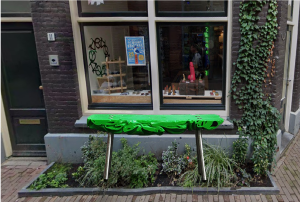
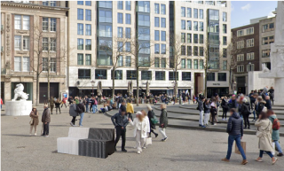
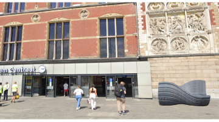

Overlap
De Overlap-bank staat trots bij The Upcycle-winkel als een duurzaam symbool van partnerschap. Samen streven Millieubels en The Upcycle naar een groenere toekomst, waar gerecyclede materialen en creativiteit samenkomen. Bezoek de bank en ontdek hoe design en duurzaamheid hand in hand gaan.
Y1in Y4ang
Y1in Y4ang staat op de Dam naast het nationaal monument. Veel mensen komen hier om te genieten van het plein en om te relaxen of even wat te eten. In samenwerking met de gemeente Amsterdam is deze bank op een van de drukste locaties in de stad geplaats
Axis
Axis staat gemakkelijk bij het Amsterdam Centraal Station. Voor elke reiziger die even moet uitrusten staat er nu een millieubels bank. Ook deze is hier geplaats in samenwerking met gemeente Amsterdam, en is te zien voor het station.